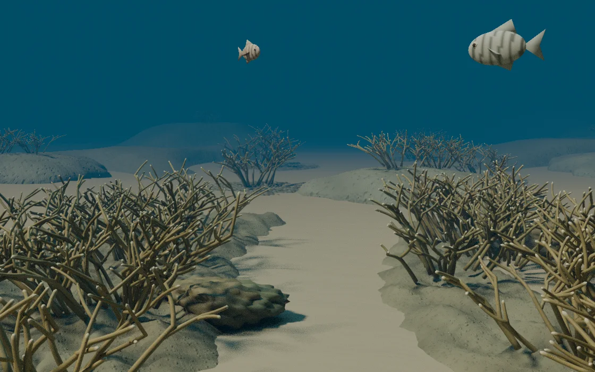

生长形态与环境方向有依据
金褐/浅棕色、短浅色尖端、细圆枝条和交织生长方向符合 NOAA 对鹿角珊瑚的描述。模型主要枝条按厘米级尺寸建模，殖体约一米上下；这支持尺度方向，不证明每根枝条或每个群落都准确。
低矮石灰岩硬底与沙地间隙是有资料支持的栖息环境表达。
REFERENCE → MODEL
参考佛罗里达与加勒比海的浅水鹿角珊瑚斑块礁边缘。重点是生长形态与环境关系，不是把不相关的“海洋元素”摆在一起。
这是参考资料指导的三维场景，不是某个真实地点的扫描复刻，也不是经过海洋生物学验证的生态模型。下面把资料支持的部分、建模取舍与仍不准确的地方分开说明。
五站镜头分别对准整片礁缘、砂地与硬底交界、分枝珊瑚、通用鱼形与礁上光照。每站把能直接看到的内容、一般知识和模型没有模拟的部分分开说明。
NOAA：相连的栖息地 · 珊瑚是动物及其礁体结构 · 礁区生物生活方式 · 光与造礁珊瑚
红树林、海草床只作为未建模的环境背景介绍；通用鱼形不能用于物种识别。导览不是完整海洋图鉴，也不把程序纹理当作真实珊瑚虫微观结构。
这次用早先的原创 2.5D 画面参考前景、中景、远景的组织方式。具体生物形态仍依据下方 NOAA 资料；生成图没有被用作物种共现或真实地形的证据。
新增的中远景礁面与底质延展由程序建模完成，使用现有的珊瑚形态。遮挡处与背面的结构属于建模推断，不是从一张图中自动恢复的真实三维记录，也不是某个地点的测绘。
判断依据是原机构资料、实拍照片和模型尺寸/几何检查。结论由这里给出，不需要观看者承担生态合理性的检查。
金褐/浅棕色、短浅色尖端、细圆枝条和交织生长方向符合 NOAA 对鹿角珊瑚的描述。模型主要枝条按厘米级尺寸建模，殖体约一米上下；这支持尺度方向，不证明每根枝条或每个群落都准确。
低矮石灰岩硬底与沙地间隙是有资料支持的栖息环境表达。
重复的分叉规则与相似的灌丛轮廓仍显人工。此前礁面像被裁出的薄片。本次检查了实际边界顶点，已将边界降到邻近砂底下方，并在窄带内逐渐过渡；原始离线图与修订图保留供核查。
鱼沿闭合路线循环、以周期动作摆尾，是动画规则，不是野外行为。水体与地平边界也仍缺少实拍中的自然层次。
通用鱼形没有确认到物种，不能据此声称它们与珊瑚真实共现。低矮团块珊瑚也没有确定到物种。
没有现场测量支撑模型的具体水深、能见度、密度与光学参数。程序孔隙纹理不是珊瑚虫结构扫描；参考照片不等于专家认证。
NOAA 描述其常见颜色为金褐或浅棕、带白色生长尖端；枝条通常约 2.5–7.6 厘米粗，可形成相互交织的丛。
建模据此采用较细、不均匀分叉的棕色枝条与浅色尖端。移除原版不受参考支持的彩色粗树干和机械叠层锥状“盘珊瑚”。
NOAA 将斑块礁、石灰岩脊与硬底列为鹿角珊瑚栖息环境。场景采用低矮的连片硬底与不规则珊瑚簇，沙地是间隙，不再强调对称的中央花园小径。
Cheeca Rocks 的实拍用于观察礁体、结壳与团块生长形态。该照片以星珊瑚和其他块状珊瑚为主；没有把它宣称为同一处鹿角珊瑚群落。
NOAA 给出的鹿角珊瑚典型水深为 15–60 英尺，约 4.6–18.3 米。这是物种环境资料，不是本模型声称测得的水深。
水色、远处对比度降低与向上透光参考实拍；雾密度、能见度、光照与焦散速度仍是表现性参数。照片的曝光与白平衡不同，不能反推出精确水体条件。
当前鱼模型和数量用于展示三维游动、转向与遮挡，没有依据标本或测量来确认物种、体长和群落共现关系。
不把条纹鱼随意标为真实物种，也不声称游动是行为学模拟。礁面纹理是原创程序材质，用来表现粗糙和孔隙，不等于真实珊瑚虫结构扫描。
两张都是同机位、同距离雾设置的三维模型离线渲染。修订图来自最终导出 GLB 的重新导入；灯光与色调仍由离线渲染器提供，不能当作网页 WebGL 实机截图。

